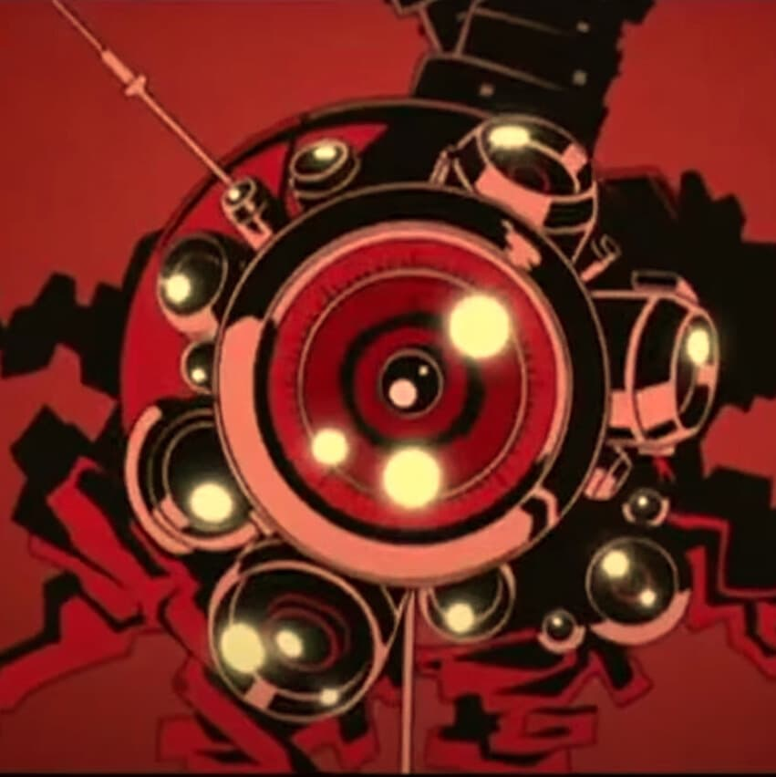
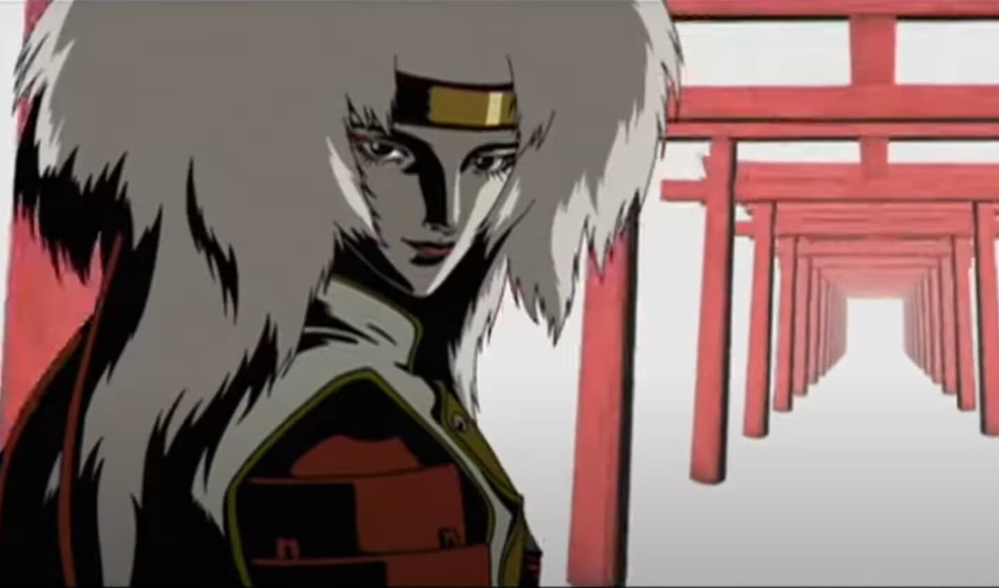

Animatrix
La Animatrix es una película de antología de ciencia ficción animada para adultos estadounidense-japonesa producida por los Wachowskis en 2003. Es una colección de nueve cortometrajes, cada uno dirigido por un director diferente, que exploran el mundo de The Matrix.
Las historias están ambientadas antes, durante y después de los eventos de la trilogía original. La Animatrix se lanzó en DVD y VHS el 3 de junio de 2003 y desde entonces se ha convertido en un clásico de culto entre los fanáticos de la franquicia . Si estás interesado en ver La Animatrix, puedes encontrarla en HBO Max. ¡Disfruta!
